Jurrasic World AliveJWA(I am not gonna type out JWA out every single time) is a mobile game and one of those that I have a love hate relationship with, just like 90% of mobile games out there. On one hand, it has really good models and designs(for the most part) but then on the other hand, it is so hard to progress while being free to play(I refuse to give ludia my money). Though, they have been better at making it better for free to play players with the number of events, esspecially all the stuff because of jurrasic world dominion.My Team
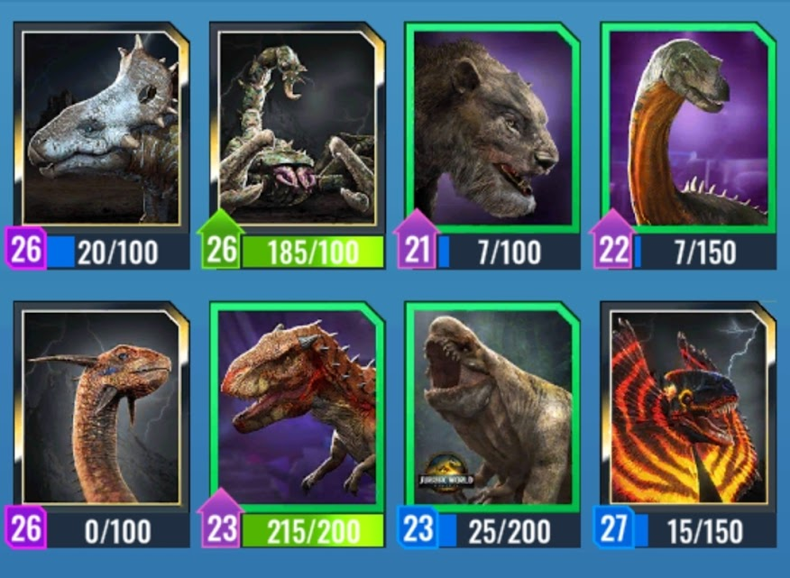
going from left to right, my team is Spinotops, Alacranix, Pantherator, Ampelorex, Gemenidus, Tyranadactalus, Distortis Rex, and ReferantemI'd say the dinosaur I have the most fun with playing on this team is Distortis Rex, mainly because team stompping with it is satisfying and it just has such a versitile moveset. This team has gotten me to a whopping 5k trophies, hauling me out of the hell that is the averiary arena. For a f2p player, that arena is hell incarnate.My Favorite Dinosaurs
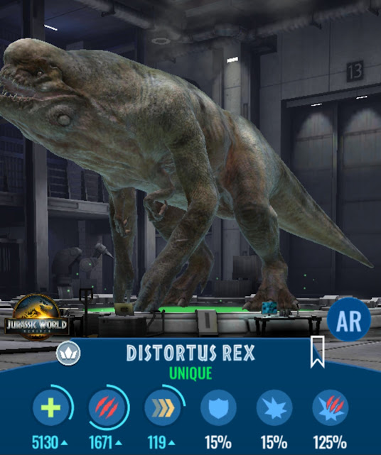
As you could tell from my glaze session above, D Rex is one of my favorite dinosaurs on my team. It's fun to play, has a great model, and some of the best animations in the game, its hard not to make it one of my favorites.
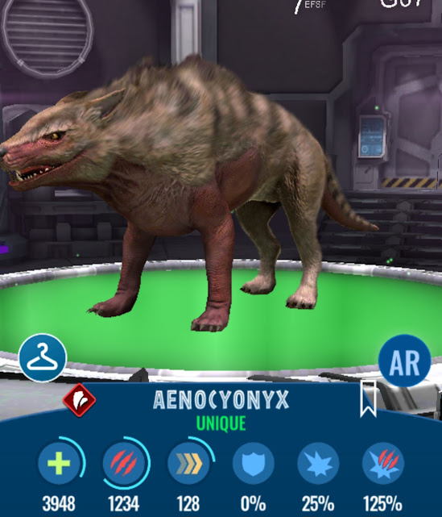
Aeconyx is sadly no longer meta and for the most part has a slightly above average kit and ok stats, the reason why its one of my favorites however is that it is the first unique that I fused completely on my own. So, becase of that, it has a special place in my heart.
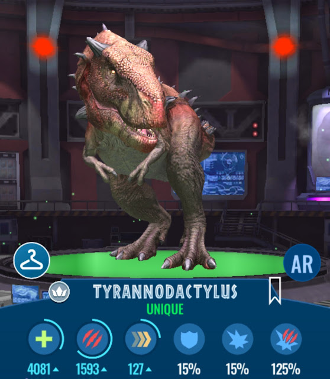
Similarly to D Rex, this fella has a really fun and unique moveset, making it really fun to play. That and it has one of THE best designs in the game and proabably the best T-rex hybrids in terms of design.
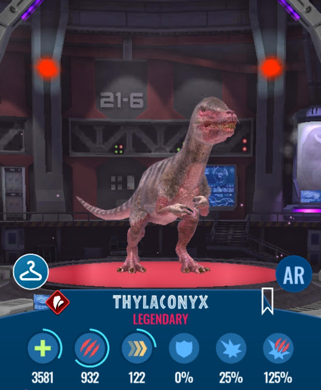
Thyloconyx wasn't the first legendary I got nor is it the strongest legendary I have but it was the first strong legendary I got. You see, Thyloconyx back in the day(2022ish) was one of the first dinos to have devour heal which made it really strong, it also allowed me to get into aviary in the first place.
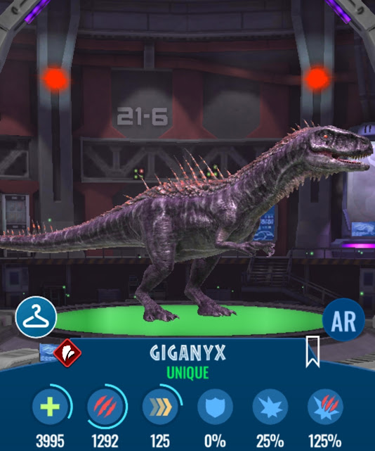
Giganyx is just a really cool looking design, one of my favorites, which is why it is here. It is also has come in clutch as it was a hard counter to some of the meta dinos back then like Rexy(dark times).
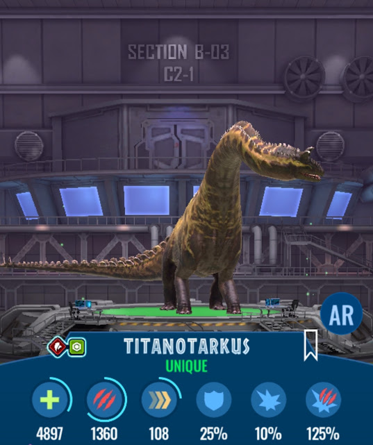
Titanotarkus is a newer dinosaur and its one of my favorites for similar reasons as to why I like D Rex. It has a really good design, top notch, and it has a fun moveset. It's moveset is bassically a tanky one shot build and its so satisfying to erase your opponenets hp with one attack. Another reason why its one of my favorites is that it can counter D Rex and hence came in clutch more than a few times.Dinos I wantAs a f2p player I have a dream to get some OP ass dinosaurs and level them up, now it will probably take an absurd amount of time, which I only have Ludia's greedy ass to thank for, here's some dinosaurs I want.
Kabuto ParkKabuto Park is one of the few pc games that I have and I love it so much. It has such a cozy artstyle, that and its mechanics are simple but fun. In the game, you have to catch bugs and then use them to fight.GameplayThe gameplay as I said earlier is simple, you catch bugs and then build a team of three bugs. You can then use these bugs to complete levels, which is battling with the charecters. In the battles, you have to push your opponenet's bugs off of the arena. You get turns to push and defend, you can use energy to play cards to help you do this.
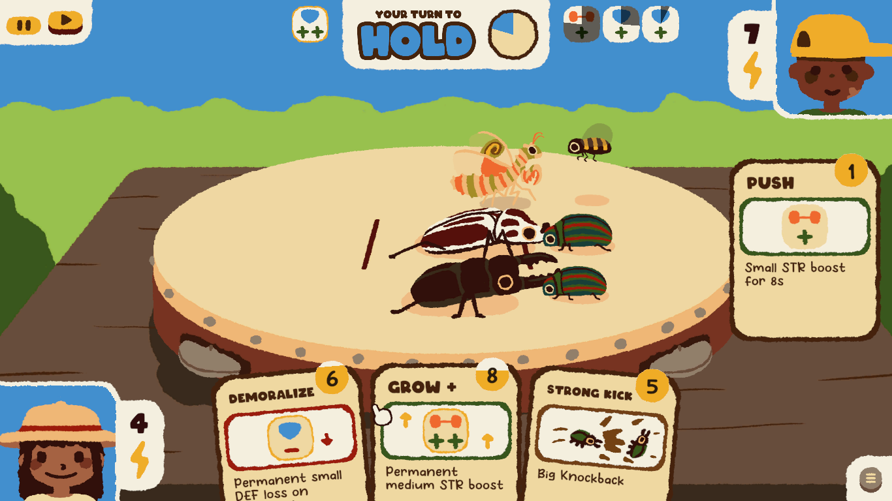
My Favorite Bugs
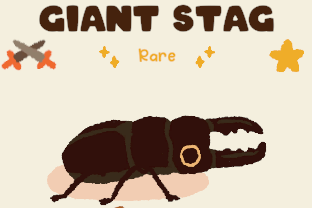
The Giant Stag is a rare bug(the highest rarity) thats found in the pine forst, it is also an abosolute monster in battle. It has Grow, which buffs your teams pushing power by a bunch, Harden, which buffs your team's defense, and Overcharged Kick, which is a big push that can knock bugs off the arena.
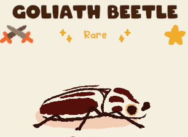
Goliath Beetle, much like the Giant Stag, is an absolute monster in battle. It has absolutely bonker stats with some of the highest defense in the game and a decent attack stat. It's moveset isn't as impressive but it does have Overcharged Kick and Strong Kick, making it really good for knocking back the enemy team.
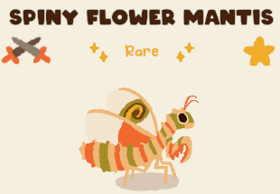
Spiny Flower Mantis has pretty good stats, specfically attack and energy, but where it really shines is it's moveset. It has Threaten and Demoralize which debuffs the opponts attack and defense respectivly, and it also has Agressive Mimcry. Agressive Mimcry steals all of your opponents buffs, key word is steal as now your opponent doesn't have stat boosts but you have all of theirs.
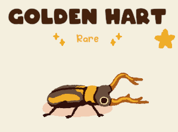
The Golden Hart is one of my favorites because, firstly, it looks really cool. And secondly, it has a really fun moveset. Big buff is pretty simple, you get stength and defense buff. It also has Strong Kick but my favorite move is Beetle army, which is you get a strength buff for every beetle on your team. It's a fun move that insentivizes you to have beetles on your team.
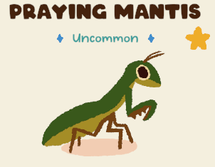
I like Mantises, I think everyone has had that memory of some kids on the fields finding a mantis and then everybody rushing over to get a look. Other than that, it's moveset is simple but incredibly dangerous depending on your team's stats. It works as a debuffer, having two moves to debuff attacks and defense, and then it has a move that increases your team's strength.
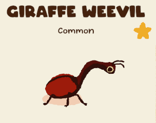
The Giraffe Wevil's moveset is bassicaly just gambling, all of its moves are randomized, random buff, weird kick(gives random knockback), random thought, and amnesia. While it objectively sucks, its a very funny moveset.
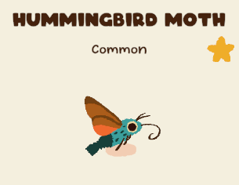
I just really like this moth, I saw one for myself in real life and it was really cool.